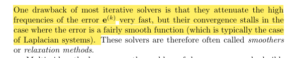
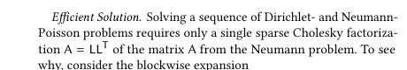
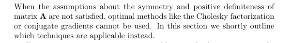

我们先不讨论方程的解存在性问题，假设解是存在的，我们考虑数值求解的算法
本文仍按「迭代法 $\rightarrow$ 共轭梯度 $\rightarrow$ 直接分解」的路线展开，重点是：先用最直观的方法建立直觉，再过渡到更高效、更稳定的工程解法。
都是迭代方法
将方程Ax=b展开 \(\begin{aligned} a_{1,1}x_1 + a_{1,2}x_2 + \cdots + a_{1,n}x_n &= b_1,\\ a_{2,1}x_1 + a_{2,2}x_2 + \cdots + a_{2,n}x_n &= b_2,\\ \vdots \quad & \vdots\\ a_{n,1}x_1 + a_{n,2}x_2 + \cdots + a_{n,n}x_n &= b_n. \end{aligned}\)
\(x_i^{(k+1)}=\frac{1}{a_{ii}}\left(b_i-\sum_{j\ne i} a_{ij}x_j^{(k)}\right)\)
\(x_i^{(k+1)}=\frac{1}{a_{ii}}\left( b_i-\sum_{j=1}^{i-1}a_{ij}x_j^{(k+1)}-\sum_{j=i+1}^{n}a_{ij}x_j^{(k)} \right)\)
可以证明如果矩阵是对角占优的，那么将收敛
直观理解：Jacobi 每步都使用旧解更新，结构简单、易并行；Gauss-Seidel 会立刻复用新分量，通常收敛更快，但天然偏串行。
线性方程解，等价于二次型的最优化 \(\Phi(x)=\frac{1}{2}x^T A x-b^T x\)
\(\begin{aligned} \kappa(A) &= \frac{\lambda_{\max}(A)}{\lambda_{\min}(A)} \quad (A.4),\\ x^{(k)} &= \arg\min_{x\in \mathcal{K}^{(k)}} \Phi(x),\qquad \mathcal{K}^{(k)} = \operatorname{span}\{p^{(0)},\ldots,p^{(k-1)}\}\quad (A.5),\\ p^{(j)T}A p^{(i)} &= 0,\quad i\ne j,\\ \nabla\Phi &= A x^{(k)} - b = -r^{(k)}. \end{aligned}\)
这里的关键不是“盲目沿负梯度前进”，而是在逐步扩展的 Krylov 子空间里寻找最优方向，从而避免普通梯度下降常见的锯齿路径。
\(\begin{aligned} k&=0, \quad r^{(0)}=p^{(0)}=Ax^{(0)}-b,\\ \text{while }&\left(\|Ax^{(k)}-b\|\le \epsilon\right)\ \text{and }\left(k<k_{\max}\right),\\ \alpha&=\frac{r^{(k)T}r^{(k)}}{p^{(k)T}Ap^{(k)}},\\ x^{(k+1)}&=x^{(k)}+\alpha p^{(k)},\\ r^{(k+1)}&=r^{(k)}-\alpha A p^{(k)},\\ \beta&=\frac{r^{(k+1)T}r^{(k+1)}}{r^{(k)T}r^{(k)}},\\ p^{(k+1)}&=r^{(k+1)}+\beta p^{(k)},\\ k&\leftarrow k+1. \end{aligned}\)
实现时通常配合如下停止准则：

对参数化问题而言，这类“高频误差先被快速抹平、低频误差收敛慢”的现象很常见，因此单纯迭代法在高精度阶段会变慢。
\(Ax=b \Leftrightarrow LL^T x=b \Leftrightarrow \begin{cases} Ly=b,\\ L^T x=y. \end{cases}\)

\(\begin{bmatrix} A_{II} & A_{IB}\\ A_{BI} & A_{BB} \end{bmatrix} = \begin{bmatrix} L_{II} & 0\\ L_{BI} & L_{BB} \end{bmatrix} \begin{bmatrix} L_{II}^T & L_{BI}^T\\ 0 & L_{BB}^T \end{bmatrix} \quad (7)\)上面的块形式可以理解为：先对系统做结构化重排，再利用稀疏性做分块消元，减少填充并提升分解效率。

\(Ax=b \Leftrightarrow LUx=b \Leftrightarrow \begin{cases} Ly=b,\\ Ux=y. \end{cases}\)
工程里常见的经验是：
Poisson 方程定义为 $\Delta a = b$，Laplace 方程是其中 $b=0$ 的特殊情况，是一种椭圆型偏微分方程。
Poisson 方程在自然界中应用广泛，比如热的扩散。限定了边界后，一般边界条件有 Dirichlet 条件与 Neumann 条件。
Dirichlet 条件（式 (3)）：
\[\begin{aligned} \Delta a &= \phi \quad \text{on } M,\\ a &= g \quad \text{on } \partial M. \end{aligned} \qquad (3)\]Neumann 条件（式 (4)）：
\[\begin{aligned} \Delta a &= \phi \quad \text{on } M,\\ \frac{\partial a}{\partial n} &= h \quad \text{on } \partial M. \end{aligned} \qquad (4)\]在三角网格上，对式 (3) 进行离散，得到线性方程组
\[Aa = P\phi.\]| 其中 $A \in \mathbb{R}^{ | V | \times | V | }$ 为 cotan-Laplace 矩阵。非对角元与对角元常用 cotangent 权表示为 |
$P$ 是 Mass 矩阵，在展平的场景下可设 $P = E$。将网格顶点分为内部点与边界点，可对矩阵 $A$ 分块。Neumann 边界条件下的 Poisson 问题可写为分块形式（式 (5)）：
\[\begin{bmatrix} A_{II} & A_{IB} \\ A_{IB}^T & A_{BB} \end{bmatrix} \begin{bmatrix} a_I \\ a_B \end{bmatrix} = \begin{bmatrix} \phi_I \\ \phi_B - h \end{bmatrix}. \qquad (5)\]| 对于 Dirichlet 条件有 $a_B = g \in \mathbb{R}^{ | B | }$，消去边界未知量后得到仅关于内部变量的方程（式 (6)）： |
因此数值上同样通过 稀疏线性系统 求解离散 Poisson 方程。
$b=0$ 为齐次线性方程组
$b\ne 0$ 非齐次线性方程组
| 解的存在唯一性，非线性方程组相容性问题 $r(A | b)=r(A)$ |
适用于大规模稀疏系统（如 PDE 离散、图问题），主要是使用直接法，这些方法都是Eigen自带的无需引用其他三方包
在参数化任务中，如果矩阵装配正确但数值结果不稳定，建议优先检查三件事：边界条件是否合理、矩阵是否满足预期性质（如 SPD）、以及是否做了适当的缩放/预处理。
| 求解器 | 适用矩阵 | 依赖 | 特点 |
|---|---|---|---|
| SimplicialLDLT | 对称正定 | 内置 | 轻量，适合 2D 问题 |
| SimplicialLLT | 对称正定 | 内置 | 比 LDLT 更快但更不稳定 |
| SparseLU | 任意方阵 | 内置 | 基于 SuperLU，支持非对称 |
| SparseQR | 任意矩阵 | 内置 | 用于最小二乘，内存高 |
#include <Eigen/Sparse>
#include <Eigen/SparseLU>
Eigen::SparseMatrix<double> A(n, n);
// ... fill A ...
Eigen::VectorXd b(n);
// ... fill b ...
Eigen::SparseLU<Eigen::SparseMatrix<double>> solver;
solver.compute(A);
if (solver.info() != Eigen::Success) {
std::cerr << "Decomposition failed!" << std::endl;
return -1;
}
Eigen::VectorXd x = solver.solve(b);